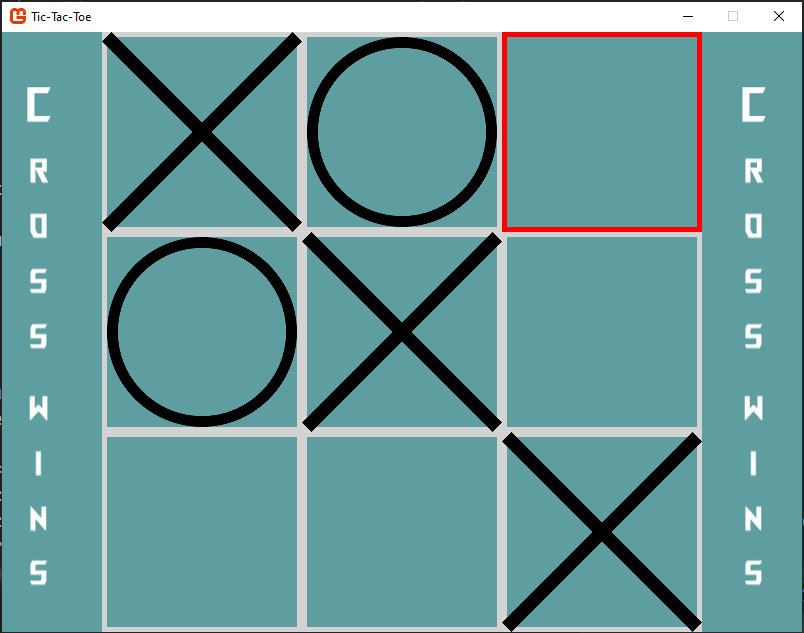

Hatvani Tamás vagyok. Backend fejlesztőnek és játék fejlesztőnek tanulok. Kiskorom óta érdekel a programozás, mert mindig is szerettem létrehozni dolgokat, és amikor találkoztam a programozással rájöttem, hogy számomra ez a tökéletes eszköz az ötleteim megvalósításához. Mindig érdekelt az, hogy hogyan működnek a háttérben a dolgok ezért választottam a backend fejelesztést. Szeretek csapatban dolgozni mert egymást segítve több és nagyobb dolgokat érhetünk el, továbba segítjük egymást a fejlődésben. Szbadidőmben szeretek modellezni vagy japán sorozatokat nézni, és programozással kapcsolatos dolgokkal foglalkozni.
A Find The Source játéknak digitális megvalósítása Unityben. A játék egy vagy több személyes játék, ahol mozogva, különböző tárgyak és akciópontok felhasználásával akciók segítségével kell megtalálni az elrejtett forrást. A projekt még fejlesztés alatt áll.

Portal Run. Ez a viszga projektem a szoftverfejlesztő és -tesztelő szakma vizsgámra. A játék 3D-s endless runner, ahol a cél minél messzebbre jutni, miközben kerülgetjük az akadályokat. A játék tartalmaz egy 3D-s menüt, és egy nodejs backenden keresztül adatokat küld és fogad egy adatbázisból.

Amőba játék. C# és MonoGame felhasználásával készült. A játék egy különleges szabályt alkalmaz, amikoris minden negyedik lerakott kör vagy kereszt után eltűnik a legkorábban lerakott jel. Ha az egeret az egyik mező fölé visszük az a következő játékostól függően egy különböző színnel kiemeli a mezőt.
Elérés: